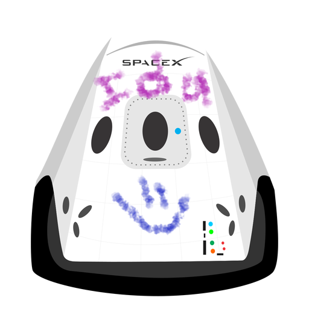

hyperblog
Tu blog de cabecera
Este es el título atractivo e interesante del post
Y este es el párrafo de inicio donde vamos a explicar las cosas increibles que se pueden hacer con ramas

Los blogs son la mejor forma de compartir información y tus ideas.Mucho más que ir a conferencias o salir en youtube. Excepto si eres un rockstar. Pero estádisticamente no lo eres... por ahora.

Los blogs son la mejor forma de compartir información y tus ideas.Mucho más que ir a conferencias o salir en youtube. Excepto si eres un rockstar. Pero estádisticamente no lo eres... por ahora.
Suscribite y dale like